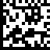
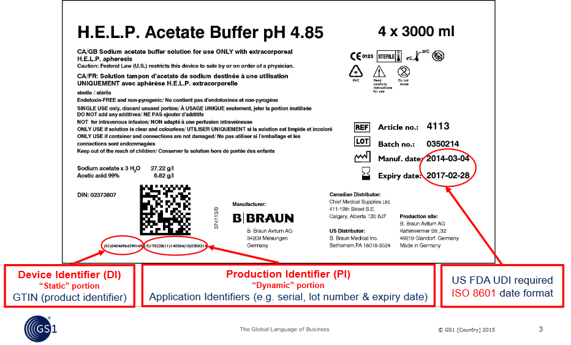

The Global Language of Business
Healthcare test images
GSK Relvar Ellipta example
(01)05000123113996(17)141100(10)PX8L(21)1BAAAA2BB3
B. Braun PERIFIX Catheter example

(01)04046964178320
B.Braun Acetate Buffer example
Scan the Data Matrix in this annotated label using the mobile app in 'Healthcare Professional' mode then click 'Get information from FDA GUDID data' button:
